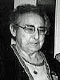

fiche familiale
*******************************************************************************
|   |
Marie Beaudoin décède à l'âge de 80 ans. Naissance le 26 août 1905 à Ste-Cécile de Masham (La Pêche) Décès le 13 février 1986 à Hull. Funérailles le 15 février 1986 à Notre-Dame-de-la-Guadeloupe de Gatineau Sépulture au cimetière Notre-Dame de Hull. Père: Isaïe Baudoin Beaudoin Mère: Catherine Renaud (sa famille) Mariage le 3 juillet 1924 à Ste-Cécile-de-Masham. Âge de l'époux 23 ans, âge de l'épouse 18 ans. Leur mariage fut célébré par son frère le Père Siméon Beaudoin. Époux: Éloi Sincennes décède à l'âge de 70 ans. Naissance le 20 décembre 1900 à Ste-Cécile de Masham (La Pêche) Décès le 9 janvier 1971 à Hull. Sépulture au cimetière Notre-Dame de Hull. Père: Eugène Sincennes Mère: Albina Carpentier (sa famille) |
 |
Enfant 1 Cécile Sincennes décède à l'âge de 21 ans. Naissance: 7 avril 1925 à Hull Décès: 27 mars 1947 à Hull Sépulture: au cimetière Notre-Dame de Hull Mariage le 15 août 1946 à St-Raymond-de-Pennafort de Hull. Conjoint: Théodore-Freddie Christoff Père: Ben Christoff Mère: Annie Cooting |
  |
Enfant 2 Thérèse Sincennes décède à l'âge de 92 ans. Naissance: 26 oct 1926 à Hull Décès: 18 août 2019 à Gatineau Mariage le 19 juin 1948 à St-Raymond-de-Pennafort de Hull. Conjoint: Conrad Rollin décède à l'âge de 82 ans. Naissance: en 1923 à Hull Décès: 21 août 2005 à Gatineau Père: Ernest Rollin Mère: Florida Lalonde |
Mariage en 1969 à Hull
Conjoint: Robert Lepage
Conjoint: Raymond Carrier
Enfant 2 Louise Rollin
Mariage en 1972 à Hull
Conjoint: Gilles Poirier
Enfant 3 Hélène Rollin
Mariage en 1977 à Hull
Conjoint: Pierre Schnobb
------------------------------------------------------------------------------
Enfant 3 Jean-Marie Sincennes
Naissance: 20 jan 1930 à Hull
Mariage le 28 août 1954 à St-Léonard-d'Aston.
Conjointe: Françoise Paul-Hus
Père: Adolphe Paul-Hus
Mère: Blanche Gauthier
Enfant 1 André-Éloi Sincennes
décède à l'âge de 29 ans
Mariage en 1976 à Hull
Conjointe: Lise-Élisabeth Boulerice
-------------------------------------------------------------------------------
Enfant 4 Jeannine Sincennes
Naissance: 7 mai 1931 à Hull
Décès: avant 2008
Mariage le 9 août 1952 à St-Raymond-de-Pennafort de Hull.
Conjoint: Patrick Halloway
n. 11 oct 1930
Père: Charles Halloway
Mère: Cecilia McEvoy
Enfant 1 Peter Halloway
Mariage en 1981 à Hull.
Conjointe: Monique Hamelin
-------------------------------------------------------------------------------
Enfant 5 Henri-Paul Sincennes
décède à la naissance.
Naissance: en 1934 à Hull
Sépulture: au Cimetière Notre-Dame de Hull
-------------------------------------------------------------------------------
Enfant 6 Guy Sincennes
Naissance: 15 jan 1936 à Hull
Mariage le 23 juillet 1966 à St-René-Goupil de Hull.
Conjointe: Nicole Laramée
n. 11 oct 1939
Père: Omer-Émile Laramée
Mère: Yvette-Marie-Alma McGrath
Enfant 1 Nathalie Sincennes
décède à la naissance.
Enfant 2 Luc Sincennes
Enfant 3 Philippe Sincennes
-------------------------------------------------------------------------------
 |
Enfant 7 Claudette Sincennes décède à l'âge de 68 ans Naissance: 6 octobre 1939 à Hull Décès: 22 avril 2008 à Gatineau Funérailles: 31 mai 2008 à Cathédrale St-Joseph de Gatineau Sépulture: au cimetière Notre-Dame de Hull Enfant 1 Nicolas-Claude Dumont-Sincennes |